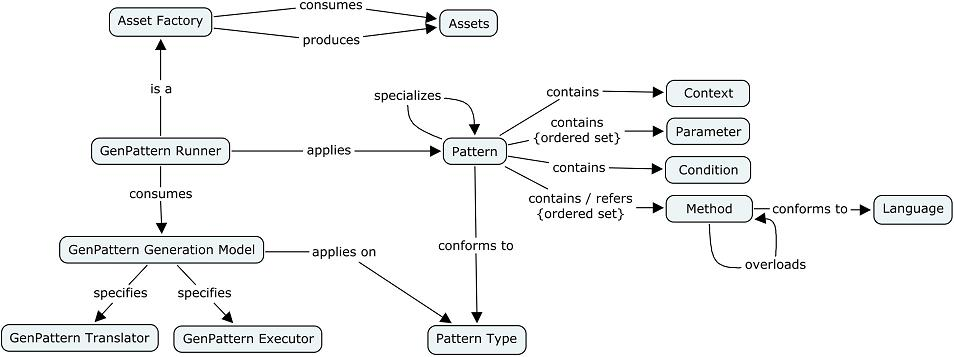

A generation pattern is a solution to a recurrent generation problem. The objective is to define families of assets (code, frameworks, tools, etc.). Generation variations depend both on the values of the pattern parameters and the ability of the pattern to manage flexibility during the generation process. The intent is i) to encapsulate internal representation, architectural and implementation decisions, and ii) tailor a pattern for meeting specific needs, either with simple or complex variations, in order to avoid writing many times the same solution.
The motivation is to produce assets with systematism and the ability to tailor this generation.
Systematism is managed with:
Tailoring is managed by:

Figure 1. Generation Pattern GLobal View
Pattern library. Patterns are organized in pattern libraries. A pattern library allows both classifying and defining pattern execution blocks.
Pattern. A pattern contains an ordered set of parameters, a condition, an ordered set of methods. A pattern can inherit from another pattern (simple inheritance) and can be connected to other patterns.
Pattern Parameter. A pattern contains a set of parameters, possibly empty. A parameter has a name and a value. A value references a model element of a metamodel (e.g., Eclipse/ECore model, or a domain model). Pattern parameters can reference model elements from different metamodels, for instance in order to work simultaneously on different perspectives. Pattern parameters are defined at the M2 level, while they work at the M1 level during the pattern execution.
Pattern parameters have two usages: i) a filtering function for selecting only model elements from a input model (at M1 level) which verifies the pattern parameter value, i.e. a type of model element (at M2 level); ii) a function of parameter declaration for pattern methods.
The set of pattern parameters defines a Cartesian product [P1 x P2 x ... x Pn]. At translation time, pattern methods are applied to each combination of parameters. (The loop on all parameters is driven by the declaration of the parameter order.) A pattern without parameter calls the pattern methods just one time.
Condition. A condition corresponds to a pre-condition for applying a pattern. The declaration of the pattern parameters defines a first filter: over a model (at the M1 level), just the model elements matching the parameter types are collected. On this Cartesian product, a condition is applied to only accept model elements. A condition may imply deep analysis over the model (e.g., with associations, inheritance, properties, statistics).
Context. It is a declaration of key/value couples, where the value can be a model element reference or a constant.
Method. A method contains a description that conforms to a language (e.g., Jet). The most popular type of description is textual but it could be action semantics or an activity graph. A method is expressed with a template format, recognized by the pattern translator. A method can overload a method of a super-pattern. A sequence of method references defines the order to apply methods at execution: methods of the current pattern, from a super-pattern or even from another pattern.
Pattern Inheritance. Pattern inheritance serves to inherit of parameter definition, methods, connections, and context from super-patterns. With pattern inheritance, the number of parameters of a pattern is equal at least to that of its super-pattern.
A super-pattern can be defined in another a pattern library than the current pattern's library, or in a library from a different Factory Component.
Pattern Connection. A pattern connection corresponds to a named pattern association. A pattern connection serves to reuse patterns. Connected patterns can be in the same pattern library or not.
Patterns are edited at first (creation, update, deletion). Then, they are translated into a target form and executed.
Translation. Generation is either applied on a pattern library or on a pattern. Method contents are translated from a source to target language (e.g., a set of textual methods into assembled Jet sheets) understandable by an engine (e.g., the Jet engine). When needed, the translation is followed by a compilation phase.
Execution. During this step, the result of the translation step is executed by an engine (e.g., the Jet model-to-text engine), and corresponds normally to another translation phase (e.g., generation of Java code from Java template methods). The result of this execution is reported by a reporter (report Class).
Figure 3. Translation and Execution of Pattern